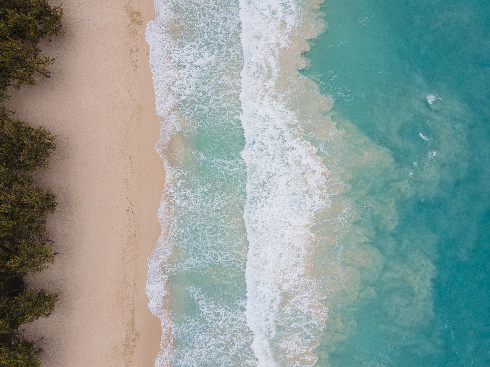

Praias do Brasil
Maresias - SP✈

uma bela praia com otimos feedbacks de todas pessoas qu visitaram la, uma praia com um bom movimento de pessoas pela região e muitos estabelecimentos por volta
Melhores atividades em Maresias
- Surfe nas praias locais. Curta as ondas que estão entre as melhores de São Paulo
- Trilhas no circuito das cachoeiras
- Confira também
- Pedaladas pelo Poço do Caetano
- Rapel no Mirante de Paúba
- Mergulho na Ilha de Alcatrazes
Restaurantes mais recomendados
- Nossa prmeira recomendação é o traicional
Restaurante Ravenala,O Restaurante Ravenala oferece um cardápio variado pra agradar a todos os paladares. São deliciosos pratos elaborados com produtos da melhor qualidade, tudo muito fresquinho e caprichado.
- Nossa segunda recomendação é outro tradicional restaurante
Badauê Unidade Maresias alta gastronômia caiçara, com peixes e frutos do mar frescos e saborosos, vindos diretamente da nossa peixaria exclusiva, garantindo sempre a qualidade para qualquer unidade do grupo BADAUÊ. Contamos também, com cortes nobres de carnes, burgues, crepes, pizzas e gelatos artesanais, tornando-se um complexo gastronômico diversificado, para todos os gostos no coração de Maresias/SP.
-
Nossa ultima recomendação é um outro tradicional
Restaurante Terral Maresias, com o deliciosas opções que vai de lanches ate frutos do mar.
Praia Grande - SP

A Praia Grande, localizada no litoral sul de São Paulo, é um dos destinos mais populares entre os paulistas que buscam sol, mar e descanso sem precisar ir muito longe da capital. Com uma orla extensa que ultrapassa os 22 quilômetros de comprimento, a cidade se destaca por suas praias bem estruturadas, ciclovias, calçadões amplos e quiosques à beira-mar que oferecem desde petiscos até refeições completas. Ao longo dos anos, a região passou por uma transformação urbanística significativa, melhorando não só a infraestrutura turística, mas também a qualidade de vida dos moradores. A Praia Grande também é conhecida por suas feiras de artesanato, centros comerciais em crescimento e um calendário recheado de eventos culturais e esportivos, principalmente durante a alta temporada. O fácil acesso pelas rodovias Imigrantes e Anchieta contribui para o fluxo constante de visitantes, especialmente nos finais de semana e feriados. Além das praias, a cidade oferece atrações como o Portinho, um espaço ecológico com áreas para piquenique e pesca, além do forte militar, que remonta ao período colonial e guarda parte da história da região.
Melhores atividades em praia grande
- atividade: curtir a orla na ciclovia e calçadão da praia.
- atividade: conhecer o Portinho
- atividade: visitar o Forte Itaipu
- atividade feirinhas de artesanato da cidade
- atividade: se aventurar no kartódromo municipal
Restaurantes mais recomendados em praia grande
-
Villa Di Pasta: Localizado no bairro Boqueirão, o Villa Di Pasta é uma cantina italiana que oferece uma variedade de massas artesanais e pratos tradicionais da culinária italiana. O ambiente é aconchegante e ideal para jantares em família ou encontros românticos. Endereço: Rua Mococa, 131, Boqueirão, Praia Grande – SP. Villa Di Pasta
-
Restaurante de culinária portuguesa em Praia Grande, litoral de São Paulo, onde irá saborear as delícias com sabor de Portugal. Nasceu em novembro de 2019 no balneário Maracanã, em Praia Grande, pelas mãos de 3 sócios. Em maio de 2023 passaram o ponto comercial para João de Sousa sendo este o atual proprietário que trás o sonho de sempre ter na mesa o gostinho especial da comida portuguesa. Dispôe de uma farta carta de vinhos portugueses bem como sobremesas, pratos de bacalhau e de polvo entre outros. Venha comer o melhor bacalhau acompanhado de um excelente vinho! O Cantinho de Portugal
-
Vila Veneza:Local aconchegante, música ao vivo, carta de vinhos elegante, sempre decorado com flores naturais, excelente cardápio de pizzas elaboradas com os melhores produtos e sempre frescos.Vila Veneza
Praia Do Félix - SP

A Praia do Português, também conhecida como Prainha do Félix, muitas vezes passa despercebida pelos turistas. Essa pequena faixa de areia está escondida por uma trilha de pedras à direita da Praia do Félix e é imperceptível para quem não a conhece. Para um visitante mais atento, basta perceber o vai e vem de turistas ao final da faixa de areia para saber que ali está uma atração que merece ser conhecida.
Com cenário que parece ter sido desenhado, a praia não chega a ter 50 metros de faixa de areia, mas é o suficiente para formar uma pequena porção de paraíso. Cercada por coqueiros, com areia clara e fina e um lindo mar verde esmeralda que forma piscina, a Praia do Português é aquela relíquia escondida em meio a um tesouro, afinal, a Praia do Félix é uma das prediletas dos turistas que visitam Ubatuba. Sendo assim, aproveite a visita à Praia do Félix para também curtir a Praia do Português. De quebra, e com um pouco mais de disposição, será possível também ir até a Praia das Conchas, localizada no canto esquerdo da Praia do Félix com acesso por trilha de vinte minutos em meio à mata. Vale dizer que não há opções para refeição por lá.
Quem estiver nos arredores da Praia do Félix poderá aproveitar o dia de passeio para visitar também a Praia de Itamambuca e a Praia do Prumirim, as duas bem pertinho e com rápido deslocamento pela estrada.
Melhores atividades em praia do félix
- Mergulho com Snorkel no Canto Direito da Praia
- Surf no Canto Esquerdo da Praia
- Trilha até a Praia do Português
- Passeio de Caiaque ou Stand Up Paddle
- Visita à Ilha do Prumirim
Restaurantes mais recomendados em praia do Félix
-
Localizado diretamente na areia da Praia do Félix, o Bruzy oferece uma experiência gastronômica à beira-mar. Com um ambiente acolhedor e infraestrutura que inclui duchas de água doce e banheiros limpos, o estabelecimento serve uma variedade de pratos, desde porções e pastéis até refeições completas. Destaque para os frutos do mar frescos e drinks variados. O Bruzy funciona diariamente das 9h às 17h30. Bruzy Praia do Félix
-
Conhecida por suas porções generosas e saborosas, a Barraca Dois Irmãos é uma parada obrigatória para quem busca petiscos à beira-mar. O cardápio inclui opções como batata frita, calabresa acebolada e diversos tipos de peixes. Além disso, oferece uma variedade de salgados e bebidas refrescantes. O ambiente é simples, mas acolhedor, perfeito para uma refeição descontraída com vista para o mar. Barraca Dois Irmãos
-
Com sua charmosa decoração em tons de rosa, a Barraca da Gê se destaca não apenas pela estética, mas também pela variedade de drinks e petiscos oferecidos. Uma vantagem é a possibilidade de solicitar meias porções, ideal para quem deseja experimentar diferentes pratos sem exagerar na quantidade. O ambiente é descontraído e perfeito para relaxar após um mergulho no mar.Barraca da Gê
Praia Juquehy - SP

Juquehy é um lugar que sempre evoca boas lembranças. Passar os dias lá é maravilhoso, seja tomando sol, jogando bola ou apenas curtindo com a família e amigos. Os restaurantes e bares são excelentes, sempre há um lugar legal para comer e relaxar. Para mim, Juquehy é aquela praia especial que sempre dá vontade de voltar. Cada visita é uma nova memória, trazendo muita nostalgia
Melhores atividades em praia juquehy
- Praticar Esportes na Praia
- Visitar a Ilha de Montão de Trigo
- Apreciar a Vista do Mirante da Barra do Una
- Explorar a Vida Noturna Local
- Passear pelo Centrinho de Juquehy
Restaurantes mais recomendados em praia de juquehy
-
Localizado à beira-mar, o Badauê Juquehy é conhecido por sua atmosfera descontraída e pratos sofisticados de frutos do mar. O restaurante oferece serviço de praia, chuveiro e banheiro para os clientes, sem cobrar pelo uso de cadeiras e guarda-sóis, desde que haja consumo no local. O cardápio inclui uma variedade de peixes frescos, sushis e pizzas, atendendo a diversos paladares. Badauê Juquehy
-
Com mais de 19 anos de tradição, o Bistrô Juquehy é um restaurante charmoso e romântico que oferece uma gastronomia refinada. O ambiente acolhedor é ideal para jantares a dois ou celebrações especiais. O cardápio apresenta uma variedade de pratos que incluem opções de peixes, frutos do mar, carnes e opções veganas. Além disso, o bistrô conta com uma brigadeiria e doces preparados com receitas tradicionais, além de uma loja de bijuterias e itens de decoração com a leveza da praia. Bistrô Juquehy
-
Com sua charmosa decoração em tons de rosa, a Barraca da Gê se destaca não apenas pela estética, mas também pela variedade de drinks e petiscos oferecidos. Uma vantagem é a possibilidade de solicitar meias porções, ideal para quem deseja experimentar diferentes pratos sem exagerar na quantidade. O ambiente é descontraído e perfeito para relaxar após um mergulho no mar.. Família Oliveira Restaurante
Ilha do Cardoso - SP

A Ilha do Cardoso é a maior de Cananeia e com mais diversidade e atrativos. Além de ser um Parque Estadual, nela existem várias comunidades de pescadores e indígenas, sítios arqueológicos (sambaquis), trilhas, cachoeiras, praias, costões rochosos, entre outros. Não há carros e a energia elétrica provém apenas de geradores. Campings e casas de pescadores estão disponíveis para acomodar os aventureiros. Agências fornecem guias e embarcações para o transporte. O lado voltado para o Canal de Ararapira e a Baía de Trapandé é rico em manguezais e as praias estão voltadas para o leste. Aqui, você precisará de alguns dias para conhecer, pois, além de ser grande, os recantos são maravilhosos!
Melhores atividades em ilha do cardoso
- Explorar as Praias Paradisíacas
- Realizar Trilhas Ecológicas na Mata Atlântica
- Observar a Fauna e Flora Local
- Participar de Passeios de Barco pela Baía dos Golfinhos
- Vivenciar o Turismo Comunitário na Vila do Marujá
Restaurantes mais recomendados em ilha do cardoso
-
Localizado na Praia de Pereirinha, o Restaurante Raiz Caiçara proporciona uma experiência gastronômica pé na areia, destacando-se pela culinária tradicional caiçara. O ambiente rústico e acolhedor é ideal para saborear pratos preparados com frutos do mar frescos, capturados na região. O restaurante opera mediante agendamento para grupos, garantindo um atendimento personalizado. Para reservas e mais informações, visite o perfil oficial no Instagram: Restaurante Raiz Caiçara
-
Situado no núcleo do Marujá, o Restaurante Recanto do Marujá é conhecido por sua atmosfera familiar e pratos caseiros que refletem a cultura local. O cardápio inclui uma variedade de opções, com destaque para os peixes e frutos do mar preparados de maneira simples e saborosa. Além disso, o restaurante oferece opções de hospedagem para aqueles que desejam prolongar a estadia. Mais informações podem ser encontradas no perfil do Facebook: Restaurante Recanto do Marujá
-
Anexo à Pousada Ilha do Cardoso, este restaurante oferece refeições completas aos hóspedes e visitantes. O cardápio é variado, com opções que vão desde pratos à base de frutos do mar até alternativas para aqueles que preferem carnes ou opções vegetarianas. O ambiente é simples e acolhedor, refletindo a tranquilidade da ilha. Para mais detalhes sobre o restaurante e a pousada, visite o site oficial: Restaurante da Pousada Ilha do Cardoso

Cuidados no Verão
Para aproveitar p verão nas praias, é importantetomar alguns cuidados, como isar protetor solar, manter-se hidratado..
- Fique longe do limão
- Abusa do protetor solar (e de roupas com fotoproteção)
- Tenah cuidado com a alimentação
- Evite nadar logo após comer
- Não fique muito tempo com roupa de banho molhada
- Não esqueça de proteger os olhos
- Cuidado com a bebida alcoólica em excesso
- Não esqueça de beber água
Dicas para não perder crianças na praia
Em praias movimentadas é essencial ficar atento ás crianças um ponto de encontro, identificar as crinaças com pulseiras...
/i.s3.glbimg.com/v1/AUTH_59edd422c0c84a879bd37670ae4f538a/internal_photos/bs/2017/S/p/MAfzTWSSiuvt4pngxJlg/criancaperdida2.jpg)
Outras Dicas
- Matenha um ponto de encontro definido.
- Use pulserias de identificação nas crianças.
- Ensine ás crianças seus nomes completos e números de telefone.
- Esteja atento á localizção das salva-vidas.
- Evite praias muito movimentadas.
- incentive as crianças a não se afastarem muito.
- Use uma barraca ou guarda-sol colorido como um ponto de refenrência.
- Esteja ciente dos arredores e identifique pontos de referência fixos.
Pensando em Viajar❓
Então veja nossas recomendação e aproveite nosso cupom de desconto.
Use a calculadora acima para planejar os custos da sua viagem e aplicar os cupons: PRAIAS10, VIAGEM20 e AZUL25!
Veja também...

Baía do Sancho
Praia famosa por ondas grandes
visite

Jericoacoara
Conhecida como terra de praias encantadoras e relaxantes, o Brasil teve uma praia eleita como uma das dez mais deslumbrantes do mundo.
visite

Vista deslumbrante
Uma paisagem que captura a beleza natural em sua forma mais pura.

Areia e verão
O encontro do mar com a calmaria de uma lagoa em pleno verão tropical.

Horizonte havaiano
As ondas do Havaí tocam o céu em uma paisagem que parece um sonho.
Anterior
Próximo